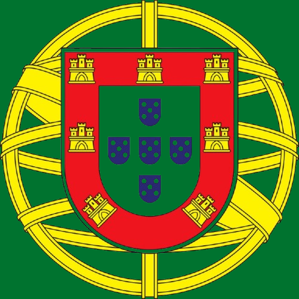

Turismo De PORTUGALDiscover the beauty, culture, and wonders of our country.
Explore PortugalPortugal is a European country located on the Iberian Peninsula, sharing a border with Spain and facing the Atlantic Ocean to the west and south. Its capital city is Lisbon.
Basic Facts about Portugal: Official name is Portuguese Republic; Capital is Lisbon; Population has ~10 million people; Official language is Portuguese; Official currency is Euro (€).
Portugal is a historic European country famous for its exploration history, scenic coastlines, cultural traditions, and tourism attractions. From the historic streets of Lisbon to the beaches of Algarve and the vineyards of Douro Valley, Portugal offers a mix of culture, nature, and heritage.
Experience fascinating history dating back to medieval times and Experience unique cultural identity shaped by centuries of history and exploration.
Explore famous for its stunning coastline along the Atlantic Ocean, especially in the Algarve. The region offers golden beaches, dramatic cliffs, sea caves, and clear waters.
Discover Portuguese cuisine and Popular dishes.
Discover amazing natural landscapes including islands, mountains, and national parks.